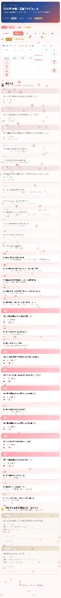

毎月月初に支援大会・イベント一覧をSlackで報告。（リスト形式・Googleスライド）だが、実は月一報告である必要はなかった！
支援大会の把握を、もっとラクに。
Slack × GAS × GitHub Pages で実現した
リアルタイム自動更新カレンダー
基金スタッフ
なっちゃん
なぜ作ったかきっかけとゴール
毎月月初に支援大会・イベント一覧をSlackで報告。（リスト形式・Googleスライド）だが、実は月一報告である必要はなかった！
コアニーズは「支援大会をスケジュール感を持ってわかりやすく把握したい」。月一報告もリスト形式も最適ではなかった。
「支援依頼が発生したタイミングで即反映」する仕組みへ変更。カレンダー形式でスケジュール感を視覚的に伝える。
支援大会・一般大会を、スケジュール感を持って、一瞥で楽に把握できること
仕組みの設計4つのパーツで考える
いつ・何をきっかけに動くか
Slackの投稿に「💛」リアクション → フォームが起動 → 大会情報を入力・送信したとき
データがある場所
フォームの回答が自動で蓄積されるスプレッドシート
データを加工してページにする
スプレッドシートの変更を検知し、Webページを自動更新
完成したページを届ける先
カレンダーページに反映 ＋ Slackに更新通知を自動送信
💡 なぜこのツールを選んだのか？ ①Slack WF＝チームがすでにSlackを使っているため追加負担ゼロ（Google Forms等は別アプリが必要）。 ②Google Sheets＝GASと直結でき、チームが使い慣れているため（Notionや専用DBは学習コストが高い）。 ③GAS＝サーバー不要・無料でGoogleサービス全体の「接着剤」になれる（Zapierは有料）。 ④GitHub Pages＝コードを送るだけで自動で公開・無料（Surge等は手動デプロイが必要）。
自動化の仕組みフォーム送信からカレンダー反映まで
Slackのフォームから
情報を入力・送信
自動でデータが蓄積
データ加工＆
GitHub自動更新
カレンダーに反映＋
Slack通知が届く
完成したページ大会カレンダーの全体像

年間の大会数バッジを表示。タブで「大会スケジュール」↔「寄付・サポーター状況」を切り替え
月を選んでカレンダーで日程を一覧把握。大会種別は色ドットで識別。今日の日付をハイライト
カレンダーの下にカードが縦並び。種別・日付・会場・主催者を色分けで表示。基金支援はゴールド枠
スクロール位置によらず常にセクション切り替えが可能な固定ナビ
画面紹介デザインの工夫ポイント
「大会スケジュール」と「寄付・サポーター状況」を分離。余計な認知コストなく目的の画面へ
スクロール不要で当月の大会全体を把握。月タブで他月への切り替えもスムーズ
白縁取り＋立体的な影で「押せる」感を演出
画面下に常時表示。スクロール位置に関わらずいつでもセクション切り替えが可能
🔒 寄付・サポーター状況の画面は個人情報保護のためモザイク処理しています
ぶつかったこと課題と解決方法
GitHubアクセストークンをコードに直書き。プロエンジニアのAIレビューで発覚。流出すればリポジトリ全体が操作されるリスク。
開発・テスト中のフォーム送信のたびにSlack通知が全スタッフに届き、迷惑をかけた
支援依頼チャットをAIが文脈を読み取って自動トリガー発動させることが理想だったが精度担保が難しかった
GASがカレンダーのデータ（JSON形式）をHTMLに書き込む際、テキスト置換（正規表現）を使っていた。大会名に特殊文字が含まれると置換が誤作動し、データの構造が壊れた。スタッフがアクセスする本番ページが赤いエラー表示になり、カレンダーが一切表示できない状態に
支援依頼の発生ベースでカレンダーが自動更新される仕組みを構築できた
カレンダー更新だけでなく、スタッフへのSlack通知まで全自動。報告の手間がゼロに
Slack → Sheets → GAS → GitHub Pages ゼロコストの自動化パイプライン
AIサブエージェント（UI/UXデザイナー・プロエンジニア）のレビューで品質向上
今後：KPI自動更新・AIによる文脈トリガーの実装
反省：デザインはキリがなかった。やめ時を決めることも大事な設計
ありがとうございました 🌸